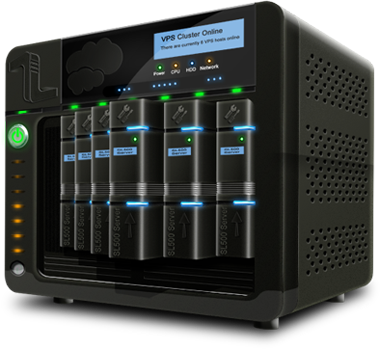
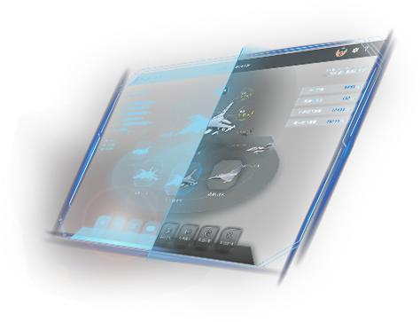

为什么选择Miniblink
简洁的API，完善的文档
易于使用的纯C API，轻松绑定到其他语言
强大的技术团队
来自金山，猎豹等公司，及微信X5内核引擎组核心开发
开发者的选择
数百款商业级软件嵌入miniblink，稳定运行
完善的技术支持，开放的技术氛围
核心源码完全开放，全天候提供技术支持
Miniblink能用来做什么
桌面 Apps UI
使用web技术栈构建桌面Apps UI，开发效率更高，维护更简单
网络爬虫
内置无头模式，实现爬虫更省内存，速度更快
web版功能本地化
通过嵌入miniblink，实现打包web功能至本地应用。可实现财务报表、OA企业办公自动化系统
自动化测试、打印、保存至pdf
即将支持打印、保存至pdf等功能
功能特性
Features
小巧、容易集成
Miniblink压缩后仅几M左右的体积，只需一个dll，通过纯C接口，数行代码即可集成到各种软件
- 小巧，压缩后仅几M大小。
- 接口纯C，单线程，交互简单。
- C++，C#，Delphi等调用方便

无比强大的功能、随心所欲的定制
完善的HTML5支持，对各种前端库友好
- 关闭跨域开关后，可以使用各种跨域功能
- 网络资源拦截，替换任意网站任意js为本地文件
- 可无缝模拟移动环境
- 整合融入nodejs，可以无缝使用nodejs各种开源框架
- 新增headless模式，可以极大节省资源，用于爬虫

支持electron模式
可无缝替换原版electron
- 仅需3个文件，即可替代原版electron
- 体积仅为原版electron的二十分之一
- 无缝替换原版，不需要改动js代码
- 支持windows xp